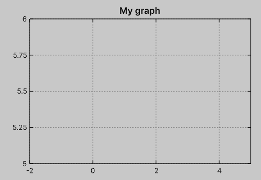
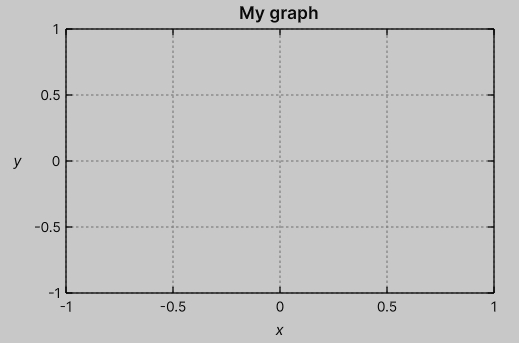
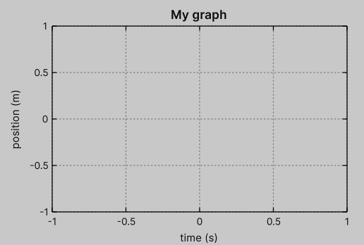
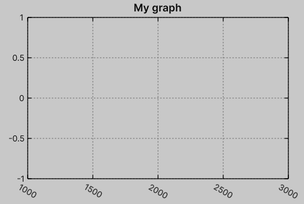

Axis
Graph objects contain two axis properties: XAxis and YAxis, which are used for x and y axis configuration respectively.
Both are available from the root object, for example:
var graph = new Graph
{
XAxis = { ... },
YAxis = { ... },
};
Range
By default, the graph axis range is adjusted automatically based on the data provided in the plots.
However, the user can fix the range from the left side, right side, or both.
To configure these ranges, use the Min and Max properties.
By default, both are set to null, which enables automatic scaling for the corresponding half-axis.
For example, the following configuration sets the x-axis to [-2, 5] and the y-axis to [5, 6]:
var graph = new Graph
{
XAxis = { Min = -2, Max = 5 },
YAxis = { Min = 5, Max = 6 },
};

Note
Pay attention to the auto tic labels. In later sections, we will learn how to customize them.
Label
To set up an axis label, use the Label property, for example:
var graph = new Graph
{
XAxis = { Label = "<i>x</i>" },
YAxis = { Label = "<i>y</i>" },
}

Alternatively, you can access the corresponding VisualElement using the Q<T>() query.
var graph = new Graph();
graph.Q<Label>("XLabel").text = "<i>x</i>";
graph.Q<Label>("YLabel").text = "<i>y</i>";
To configure the style of the label, you can use standard Label styling via the .graph-xlabel and .graph-ylabel USS classes.
.graph-xlabel {
font-size: 12px;
...
}
.graph-ylabel {
-unity-font-style: bold;
...
}
Label rotation
You can also rotate labels by a given number of degrees.
This is especially useful when the y-axis label is long.
Unfortunately, UI Toolkit does not properly handle rotated bounding boxes, so using style.rotation does not produce the expected layout behavior.
To address this limitation, this package automatically adjusts the relevant layout sizes internally.
Users can rotate labels using the custom USS properties --graph-xlabel-rotation and --graph-ylabel-rotation, which are applied to the .graph-canvas class.

Tics
The package implements various ways of defining tics. By default, tics are generated automatically. How to configure their values and formatting will be discussed in a separate section (see Tutorial/Tics).
Similar to labels, tic labels must be handled internally since style.rotation does not affect the bounding boxes of the corresponding visual elements.
This is handled via custom USS properties --graph-xtics-rotation and --graph-ytics-rotation, which are applied to the .graph-canvas class.
